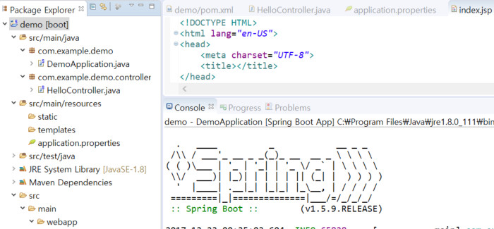
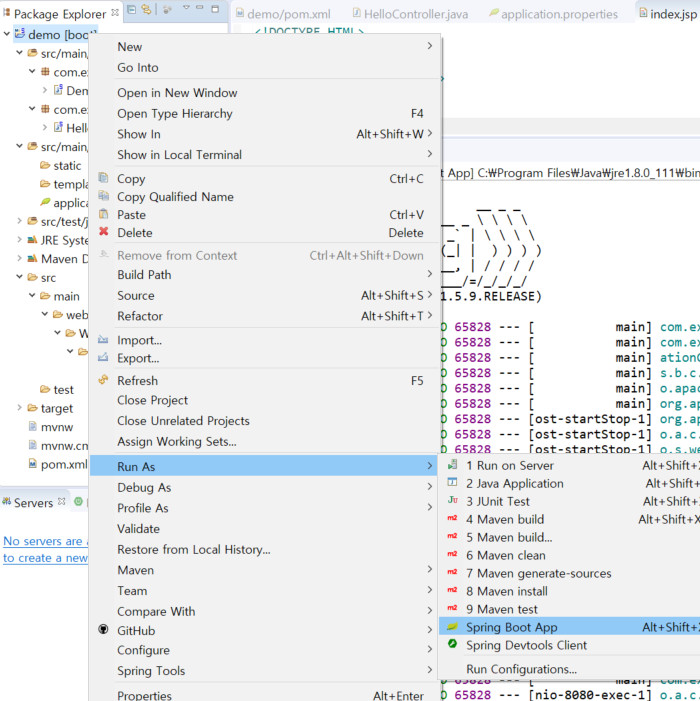
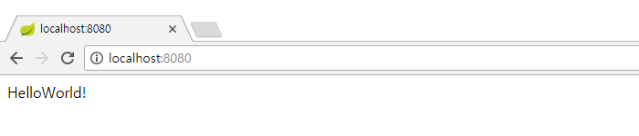

pom.xml
spring-boot-starter-web에 포함된 tomcat은 JSP엔진을 포함하지 않아 pom.xml에 아래와 같이 추가를 해야한다.
<dependency>
<groupId>org.apache.tomcat.embed</groupId>
<artifactId>tomcat-embed-jasper</artifactId>
<scope>provided</scope>
</dependency>
<dependency>
<groupId>javax.servlet</groupId>
<artifactId>jstl</artifactId>
</dependency>
HelloController.java
import org.springframework.stereotype.Controller;
import org.springframework.web.bind.annotation.RequestMapping;
@Controller
public class HelloController {
@RequestMapping("/")
public String index() {
return "index";
}
}
application.properties
src/main/resources/application.properties파일에 아래와 같이 jsp파일이 존재하는 폴더를 지정한다.
spring.mvc.view.prefix=/WEB-INF/jsp/
spring.mvc.view.suffix=.jsp
index.jsp
<!DOCTYPE HTML>
<html lang="en-US">
<head>
<meta charset="UTF-8">
<title></title>
</head>
<body>
HelloWorld!
</body>
</html>
위의 소스를 아래와 같은 구조로 작성한다.

프로젝트 폴더에서 마우스 오른쪽 클릭 -> Run As -> Spring Boot App을 실행한다.

브라우저에서 http://localhost:8080을 입력하면 HelloWorld!가 출력된다.
